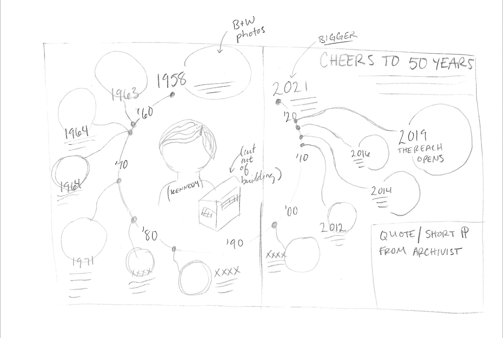
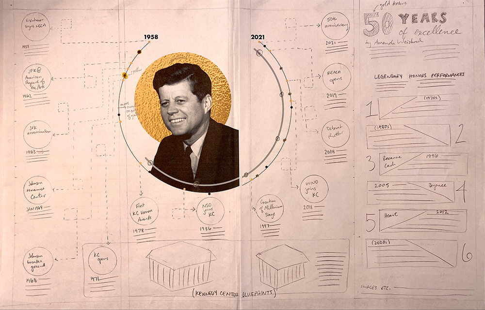

Fifty Years Celebrating the Performing Arts
An infographic highlighting key moments in the history of the Kennedy Center from 1971 to 2021
This magazine spread aims to celebrate the Kennedy Center's legacy by showcasing its most significant milestones and contributions to the performing arts. Through engaging visuals and informative content, I sought to honor the institution's impact on culture and society for its 50th anniversary.

This is the final, published version of the infographic, which was featured in District Fray magazine in 2021. (Amanda Weisbrod)
Click here to view the published project.
⭐ 2022 Society for News Design Student Design Contest (First Place, Infographics Category)
My assignment was to tell the history of the John F. Kennedy Center for the Performing Arts in a visual manner for the center's 50th anniversary. I was inspired by circular timelines I found on Pinterest, as well as the styling of Cosmopolitan's alternative story layouts. I spent most of my time on the back end of this project brainstorming design concepts.
Because JFK was Catholic, I thought it would be clever to put a translucent gold foil circle behind his skull to mimic imagery of Catholic saints, and with black and white photos, I loved the idea of using a monochromatic palette. As for challenges I faced, I had to get creative with the layout of everything on the page because there's a lot going on. Editing down the amount of content I included was a crucial step in this process.
Programs used: Adobe Illustrator, Adobe InDesign, Adobe Photoshop
Process
My first sketch for the Kennedy Center project. (Amanda Weisbrod)
This was my final sketch before heading to InDesign for the digital phase. (Amanda Weisbrod)
Click here to view the published project.
« Previous Next »